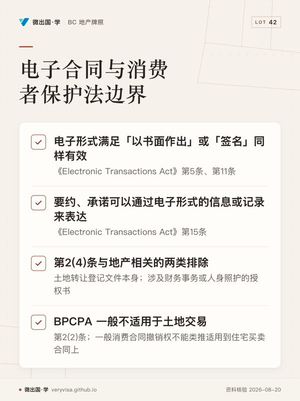

🃏 Flashcards · 3 闪卡 · 3 张 🖼 Slides · 2 幻灯 · 2 页 ✍️ Questions · 13 刷题 · 13 道
法律基础与产权 law-foundation P2 稳住 P2 Hold steady
ZH EN ZH + EN
先看这一章怎么考 First, how this chapter is tested
状态辨析题：给出一段有瑕疵的交易（如缺少书面记录、一方未成年、受欺诈或标的物灭失），要求判断合同属于无效（void）、可撤销（voidable）、非法（illegal）还是不可执行（unenforceable）。 Contract status classification questions: Presenting a transaction with a legal defect (such as lack of writing, an infant party, fraudulent inducement, or destruction of the subject matter), testing whether the contract is void, voidable, illegal, or unenforceable. 时间线与生效节点题：围绕要约（offer）、反要约（counter-offer）、撤回（revocation）与邮寄承诺规则（postal acceptance rule）排列先后顺序，考合同究竟在哪个时间点成立或消灭。 Timeline and effective moment questions: Ordering events involving offers, counter-offers, revocations, and the postal acceptance rule to test the exact point in time when a contract is formed or extinguished. 虚假陈述与缺陷分类题：给出卖方或持牌人的一句话、或者房屋的某项物理状况与周边事件，判断属于无心虚假陈述（innocent misrepresentation）、故意虚假陈述（fraudulent misrepresentation）、潜在缺陷（latent defect）还是明显缺陷（patent defect），并追问对应的救济手段。 Misrepresentation and defect classification questions: Given statements by a seller or licensee, or physical property conditions and external events, classifying them as innocent misrepresentation, fraudulent misrepresentation, latent defects, or patent defects, and testing the applicable remedies. 最常丢分的陷阱（看到题干信号就警觉） Traps that cost the most marks (watch for the signal in the stem)
把不可执行当成无效 Confusing unenforceable with void 题干出现 oral agreement、not in writing、Law and Equity Act s.59 或 19 岁以下当事人（infant）。 The question stem mentions an oral agreement, not in writing, Law and Equity Act s. 59, or a party under 19 years of age (infant). 把邮寄规则套用到撤回上 Applying the postal acceptance rule to revocations 题干同时出现 mailed revocation 与 mailed acceptance，或出现要约写明有效期但未签订选择权合同（option agreement）。 The question stem mentions both a mailed revocation and a mailed acceptance, or states an offer expiration date without an option agreement. 反要约后试图回头接受原要约 Attempting to accept the original offer after making a counter-offer 题干中受要约人改动了任一条款后遭拒，随后声明「那我接受你原来的价格」。 The question stem shows the offeree modifying any term, being rejected, and then stating that they accept the original terms. 本章考点页：导图、要点表、7 道带逐项解析的练习 →
本章地位 ：地产交易的两份合同——代理合同与买卖合同——都要先经这一章的考验才能站得住。
考试口径这一章讲的是通则 ：合同怎么成立、怎么失效、怎么终止、违约了能要回什么。
下一章（标准买卖合同的具体条款）建立在这一章之上，本篇不重复那一部分。
这一章的骨架是普通法（common law），变动不算快 ，但里面藏着两处考试材料没讲清、一处考试口径完全没提的现行边界。
核实日期：2026-09-05 ，出处见文末源表。
一、合同的宪法：七大要素与四种「无效」 本节回答 This section answers 合同成立需要哪七个要素，以及四种瑕疵状态各自的法律后果是什么 The seven essential elements required to form a contract and the legal consequences of the four defect statuses
制度地位 ：合同法要回答的第一个问题，不是"这份合同写得好不好"，而是它算不算数 。
法院不会强制执行一份"不算数"的合同——搞清楚一份文件到底是不是合同，是持牌人在拿到客户签字那一刻起
就要绷紧的第一根弦。
法律上，一份有约束力的合同（binding contract）需要同时具备七个要素：
要约（offer） 承诺（acceptance） 对价（consideration） 法律意图（legal intention） 缔约能力（capacity） 合法目的（legal object） 真实同意（genuine consent）
七个要素少一个都不行 。这是这一章余下所有内容的骨架：下面每一节，其实都在回答"这一个要素出问题时会怎样"。
「不算数」也分四种严重程度
图：合同四种状态——四种状态的法律后果完全不同
一份"有问题"的合同不是非黑即白，法律上区分四种状态，后果完全不同 ：
⚠️
「口头协议不算数」是个常见的过度简化
「不可执行」最典型的例子，就是接下来要讲的地产合同的书面要求 ——但考试口径这一句话背后的现行规则，比"必须写下来"复杂得多 。
节末检索小测 · 先别往回翻，凭记忆作答 Quick recall check: answer from memory before scrolling back
A party enters into an agreement that contains all seven essential elements of a contract, but a procedural defect prevents either party from suing in court to force performance. How does contract law classify this agreement?
当事人订立了一份具备合同全部七大要素的协议，但因某项程序性缺陷导致任何一方都无法向法院起诉强制对方履行。合同法如何归类这份协议？
a Void from the outset, meaning neither party ever acquired any legal rights. ✗ 无效（void）指合同从一开始就没存在过（如欠缺实质要素或共同错误），而非具备全部要素却因程序性理由无法起诉，这是「把不可执行当成无效」的常见陷阱。 A void contract never existed in law from the outset (such as lacking essential elements or tainted by common mistake), rather than having all elements present but barred by a procedural defect, representing the common trap of confusing unenforceable with void.
b Unenforceable, meaning the contract itself is not void but cannot be enforced by legal action. ✓ 当合同具备全部七个要素，仅因程序性理由（procedural defect）不能上法院起诉强制履行时，该合同属于不可执行（unenforceable），合同本身并不算无效。 When a contract possesses all seven essential elements but cannot be enforced through court action solely due to a procedural defect, the agreement is unenforceable, not void.
c Voidable at the option of the party who discovered the procedural defect. ✗ 可撤销（voidable）是指至少一方有权选择撤销或继续履行（如受胁迫或虚假陈述），在撤销前依然可以强制执行，与程序性阻碍导致无法起诉不同。 A voidable contract allows at least one party the option to rescind or proceed (such as under duress or misrepresentation), remaining fully enforceable until rescinded, which differs from a procedural bar to litigation.
d Illegal, meaning the court will refuse to assist either party in recovering money paid. ✗ 非法（illegal）针对违反公共政策或制定法的合同，题干明确指出全部七要素（含合法目的）均已具备，仅存在程序性缺陷。 Illegal contracts involve violations of public policy or statute; the question stem explicitly notes that all seven essential elements (including legality of object) are present and only a procedural defect exists.
看答案与每个选项的解析 Show the answer and why each option is right or wrong 答案 Answer ：b
二、书面要求的现行边界：LEA s.59 考试材料没讲清的三条路 本节回答 This section answers 口头土地合同为何不可执行，以及成文法认可哪三条可执行路径 Why oral contracts respecting land are unenforceable and the three statutory pathways to enforceability
考试口径把这条规则一句带过：涉及土地的合同（包括买卖合同）通常必须以书面形式作出，
依据是《衡平法》（Law and Equity Act，RSBC 1996, c. 253）第 59 条 ，否则不可执行；
细节留给讲代理合同与买卖合同那一章展开。这句话没说错，但只讲了故事的一半。
现行 s.59(3) 的实际结构，是三条并列的路，不是一句"必须书面"就完事 ：
(a) 书面路径 ：由被追究一方（或其代理人）签署的书面文件，能表明合同已经订立、且能合理指明标的物；(b) 行为确认路径 ：被追究一方做出了某个行为 ，或对另一方主张已订立合同的行为默认了 ，
这个行为本身表明确有一份与所主张内容不矛盾的合同或处分存在——支付或接受定金/部分价款就算这种行为 ；(c) 不利变更依赖路径 ：主张有合同存在的一方，合理信赖这份合同 改变了自己的处境，
以至于不强制执行这份合同就会造成对双方利益都不公平的结果。
这意味着什么 ：一份完全口头达成的土地买卖约定，不是自动就"因为没写字"而不可执行 ——
如果一方已经收了定金、或另一方已经因为信赖这份口头约定而做出了让自己吃亏的安排，
法院仍然可能依 s.59(3)(b) 或 s.59(3)(c) 认定这份合同可以执行。s.59 现行文本本身就把"部分履行可以补书面之缺"这条
普通法上的衡平法则写进了成文法 ，不是留给法官另行创设的例外。
✕
考试口径与实务口径都要记住，但用法不同
本站自测 ：地产合同一般要求书面，但题干涉及 s.59(3) 的例外时须一并判断，
不要在选择题里把"口头协议在特殊情况下也可能被强制执行"当成默认答案。
实务口径 ：真遇到客户问"我们只是口头谈好了，对方现在反悔了，是不是就没辙"，
正确动作是转介律师核实是否落进 (b)/(c) 两条例外 ，而不是直接告诉客户"口说无凭，一定没用"——
那句话在现行法下不总是对的 ，草率下这个结论，客户可能因此放弃了一个原本能主张的权利。
节末检索小测 · 先别往回翻，凭记忆作答 Quick recall check: answer from memory before scrolling back
Under the exam rule based on Section 59 of the Law and Equity Act, what is the general consequence if a contract respecting land is made orally without any written record or act of part performance?
根据基于《衡平法》第 59 条的考试口径规则，如果一份涉及土地的合同仅以口头达成，既无任何书面记录也无部分履行等确认行为，一般后果是什么？
a The agreement is illegal and both parties face statutory penalties. ✗ 口头达成土地买卖并不违反刑法或公共政策，不属于非法（illegal）合同，只是不满足成文法上的程序性证明要求。 An oral land contract does not violate criminal law or public policy and is not illegal; it merely fails to meet the statutory procedural proof requirements.
b The agreement is completely void as if the parties had never spoken. ✗ 考试常见陷阱是把欠缺书面形式当成无效（void）；实际上口头土地合同本身并非无效，而是不可执行（unenforceable）。 A common exam trap is treating the absence of writing as void; in reality, an oral land contract is not void, but unenforceable.
c The agreement is unenforceable in court for lack of required formality. ✓ 依《衡平法》（Law and Equity Act）第 59 条的考试口径，涉及土地的合同一般须以书面形式作出，否则属于不可执行（unenforceable）；现行第 59(3) 条还允许通过行为确认（如收付定金）或不利变更依赖路径执行，但本题题干已排除这些情形。 Under the exam rule for Section 59 of the Law and Equity Act, a contract respecting land must generally be in writing or it is unenforceable; while current Section 59(3) also allows enforcement via acts of confirmation (such as deposits) or detrimental reliance, the question stem has ruled out those exceptions.
d The agreement is automatically converted into an option agreement. ✗ 选择权合同（option agreement）需要专门约定并支付独立对价以锁住要约，口头土地合同不会自动转化为选择权合同。 An option agreement requires express terms and separate consideration to keep an offer open, and an oral land contract does not automatically transform into an option agreement.
看答案与每个选项的解析 Show the answer and why each option is right or wrong 答案 Answer ：c
三、要约：谁能接受、几时失效、怎么撤回 本节回答 This section answers 挂牌标价算不算要约、谁有资格接受要约、怎样才能真正锁住要约 Whether a listing price counts as an offer, who has standing to accept an offer, and how to create a binding option 本章考题 1 Question 1
要约 vs 「邀请磋商」
要约（offer）是一方向另一方做出的、一旦被接受就形成合同的承诺。它必须用清楚、不含糊的措辞 表达；
如果一句话可以有一种以上合理解释，法院不会强制执行任何一种解释。
要约要和「邀请磋商」（invitation to treat） 分清楚——后者只是邀请对方来出价，本身不能被"接受"成合同。
房源在 MLS 上标价、报纸广告、橱窗展示，通常都是邀请磋商：卖方标价 $780,000 挂牌，
买方出价才是要约 ，卖方接不接受、要不要还价，主动权仍在卖方手里。
要约通常只能由它指向的那个人（或那群人） 接受——甲向乙开价卖车，丙路过听见也想接受，丙接受不了。
但「悬赏要约」（standing offer） 是例外：面向公众发出、任何人都能接受，第一个满足条件并通知要约人的人有权主张。
要约几时失效
要约会因以下任何一种情况失效：约定的期限届满而未被接受；没有约定期限但已经过了"合理时间"；
要约人在被接受前撤回（revocation） ；任何一方在被接受前死亡或丧失行为能力；
出现反要约（counter-offer）；或要约被拒绝。
撤回的规则 ：只要还没被接受，要约随时可以撤回，即使要约里写明了"保留到某个时间" ——
"保留到某日"这句话本身不构成对撤回权的放弃。但撤回必须真正传达给对方 才生效；
撤回不需要书面形式，但为了将来能在法庭上证明，最好留一份书面记录。
ℹ️
撤回没有"邮寄规则"
承诺可以适用"投邮生效"的规则（见下一节），撤回不适用 ——撤回信寄出但对方还没收到之前，
要约人的撤回是无效的，要约仍然有效、随时可能被对方接受。
唯一能真正把要约"锁住"一段时间 的工具是选择权合同（option agreement） ：
要约人另外收取一笔独立对价，换来在约定期限内不能撤回、也不能另卖给别人 的承诺。
这本身是一份独立的合同——选择权合同一旦成立，要约人就失去了随意撤回原要约的权利，
这和一般要约"说撤就能撤"是本质区别。
节末检索小测 · 先别往回翻，凭记忆作答 Quick recall check: answer from memory before scrolling back
A seller posts a property on the listing system at a price of $780,000. A prospective buyer immediately sends a written statement saying, 'I accept your offer of $780,000.' Has a binding contract been formed?
卖方在挂牌系统上以 $780,000 的价格挂出一处房产。一位潜在买家立即发来书面声明说：「我接受你 $780,000 的要约。」双方之间是否成立了有约束力的合同？
a No, because a property listing is an invitation to treat, and the buyer's statement is actually the offer. ✓ 房源在挂牌系统上标价属于邀请磋商（invitation to treat），只是邀请对方来出价，本身不能被接受成合同；买方的出价才是要约（offer），卖方仍握有是否接受的主动权。 A listing price on the MLS system is an invitation to treat that merely invites offers and cannot be accepted to form a contract; the buyer's response is an offer, leaving the seller with the discretion whether to accept.
b Yes, because a listing is a standing offer open to the first member of the public who accepts it. ✗ 挂牌标价、报纸广告和橱窗展示通常都是邀请磋商，而不是面向公众发出的悬赏要约（standing offer）。 Listing prices, newspaper advertisements, and window displays are generally invitations to treat rather than standing offers made to the public.
c Yes, provided the buyer delivers the statement in writing to satisfy the Law and Equity Act. ✗ 即便买方采用了书面形式，由于卖方的挂牌只是邀请磋商而非要约，没有卖方的承诺（acceptance）就不可能成立合同。 Even though the buyer used a written statement, because the seller's listing was merely an invitation to treat rather than an offer, no contract could form without acceptance by the seller.
d No, because an offer for land cannot be accepted without first signing an option agreement. ✗ 选择权合同（option agreement）只用于锁住要约使其在期限内不可撤回，并不是普通地产买卖合同成立的前置条件。 An option agreement serves only to hold an offer open irrevocably for a specified period and is not a prerequisite for forming an ordinary real estate contract.
看答案与每个选项的解析 Show the answer and why each option is right or wrong 答案 Answer ：a
四、承诺：邮箱规则与即时通讯的分界 本节回答 This section answers 即时通讯与邮寄承诺分别几时生效，以及反要约与单纯询问的区别 When acceptances take effect under instantaneous communication versus the postal rule, and how counter-offers differ from inquiries
承诺（acceptance）必须是清楚的、积极的行为 ——"你不回复我就当你同意了"这种约定，沉默不构成承诺。
承诺的方式要看要约本身有没有指定：要约指定了方式，就照那个方式接受；没指定，就照要约本身送达的方式接受
（电话要约通常配电话承诺，信件要约通常配信件承诺）。
承诺什么时候算生效，取决于沟通方式是"即时"还是"非即时" ：
即时方式 （电话、传真等）：承诺要真正被要约人收到 才算生效。电话线中途断了、要约人根本没听到"我接受"，
就没有成立合同。非即时方式 （邮寄）：承诺在投入邮筒的那一刻 就生效——即使信件在途中遗失、要约人从没收到，
合同依然成立。这条"邮寄承诺规则"（postal acceptance rule）背后的逻辑是：是要约人自己选择了邮寄这种有风险的传达方式 ，
风险就该由选择这种方式的一方承担；要约人如果想避免这个风险，本可以明确要求"承诺以实际收到为准"。
方式没对上号（该即时却选了非即时，或反过来）时，风险落在没照要约方式来的那一方 身上：
承诺如果因此丢失或迟到，合同不成立。
反要约会杀死原要约
反要约（counter-offer） 是受要约人对要约条款做出任何改动后，反过来向原要约人提出的新要约。
一旦提出反要约，原要约在法律上就终止了 ——即使受要约人后来改变主意想重新接受原来的条件，
也接受不了，因为那个要约已经不存在了。
🔧
情景：反要约吃掉了原来的价钱
陈先生开价 $680,000 想买一套联排别墅，卖方王女士回复"我要 $700,000"。
陈先生想了想，决定按 $700,000 成交——这没问题，因为王女士的反要约仍然摆在桌上，尚未被拒绝或撤回。
但如果王女士先说了一句"我不能接受这个反要约，$680,000 我也不卖"，
陈先生这时候再想回头接受最初的 $680,000 反要约就晚了：原来那个方向的要约已经在反要约提出那一刻终止 ，
王女士的这句拒绝没有"复活"任何东西，双方只能重新谈。
需要区分的是：单纯问一句"你的底价还有商量空间吗"是询问（inquiry） ，不会终止原要约；
但改动了条款的回复，哪怕只改了一个数字，就是反要约。两者的界线有时候很细，
拟写回复信函时，凡是涉及改动价格、交割日、条件的措辞都要谨慎，避免无意中把一个能接受的要约变没了。
节末检索小测 · 先别往回翻，凭记忆作答 Quick recall check: answer from memory before scrolling back
A seller offers to sell a townhouse for $700,000. Before deciding, the buyer asks the seller's licensee, 'Is there any room to negotiate on the bottom-line price?' The seller replies, 'No.' The buyer then immediately accepts the $700,000 offer before it expires. What is the legal result?
卖方提出以 $700,000 出售一套联排别墅。在作决定前，买方问卖方持牌人：「你的底价还有商量空间吗？」卖方回答：「没有。」买方随后在要约到期前立即接受了 $700,000 的要约。法律后果是什么？
a No contract is formed because asking about the price constituted a counter-offer that terminated the $700,000 offer. ✗ 改动了条款的回复才是反要约（counter-offer）；买方只是试探询问是否有商量空间，没有提出新条款，不会杀死原要约。 Only a response proposing modified terms constitutes a counter-offer; the buyer merely inquired whether room to negotiate existed without proposing new terms, which does not terminate the original offer.
b A binding contract is formed because a mere inquiry does not terminate the original offer. ✓ 单纯问一句「你的底价还有商量空间吗」属于询问（inquiry），不会终止原要约；只要原要约尚未到期或被撤回，买方依然可以有效接受（acceptance）。 Merely asking whether there is room to negotiate is an inquiry that does not terminate the original offer; as long as the offer has not expired or been revoked, the buyer can still validly accept it.
c No contract is formed because the seller's reply of 'No' operated as a revocation of the $700,000 offer. ✗ 卖方回答「没有商量空间」只是拒绝降价，并非传达撤回（revocation）原 $700,000 要约的意思表示。 The seller's response stating there was no room to negotiate was merely a refusal to discount, not a communication revoking the original $700,000 offer.
d A binding contract is formed only if the seller re-signs the offer to revive it after the inquiry. ✗ 由于单纯询问（inquiry）从未终止原要约，原要约一直有效存在，不需要卖方重新签字「复活」。 Because a mere inquiry never terminated the original offer, the offer remained continuously open and did not require the seller's re-signature to be revived.
看答案与每个选项的解析 Show the answer and why each option is right or wrong 答案 Answer ：b
五、对价：一块钱和十万块钱一样有效 本节回答 This section answers 对价需不需要等价、过去的对价算不算数及无对价何时有效 Whether consideration must be equal in value, the validity of past consideration, and when agreements without consideration are binding
对价（consideration）是合同得以成立的第五个要素：促成方（promissor）必须从受诺方（promissee）那里
"换到"某种法律上认可的价值——权利、利益、损失或责任的承担都算。对价不需要是钱 ，
买卖合同里卖方交付产权、买方支付价款,互为对价即可构成有效合同；法院不审查对价是否"划算"
（价格高低是买卖双方的事），除非涉及欺诈、胁迫或不当影响。"$1 及其他有价对价" 这种措辞
在法律上和"十万加元"一样有效。
一个常被忽略的例外是「过去的对价」 （past consideration）不算数：如果对方的付出发生在
你许诺付款之前 ，事后再补一句"我给你钱"，这句承诺没有对价支撑，法律上不能强制执行。
合同条款的变更通常也需要新的对价才能生效 ——但近年判例（Rosas v. Toca , 2018 BCCA 191）
显示，在延长履行期限 这类情形下，法院不一定坚持要求额外对价。这条留一个提醒：
合同变更该不该另收一笔"象征性对价"（哪怕只是 $1），最好还是照老办法做，不要指望每一次延期变更
都能靠这条判例免责。
印鉴：没有对价也能约束双方的另一条路
如果一份合同做成加盖印鉴（seal） 的形式，即使没有对价，也照样有约束力 。
现在常见的是买文具店买到的红色贴纸式"法律印鉴"，签字时贴上即可；关键是双方都清楚印鉴的法律效力才算数，
公司盖的公司印章不能替代对价的作用 。
没约定价钱，法律会补一个"合理数额"：quantum meruit
"quantum meruit" （拉丁语，"应得多少"）是这样一条原则：一方请求另一方提供服务，
即使双方没谈好具体金额，法律也会默认对方有义务支付一个合理数额 。它适用于四种情形：
合同没约定金额；一方违约但无辜方已经部分履行、要求为已完成的部分拿钱；合同本身无效但已有工作或服务被履行；
以及原合同被新合同取代的情形。
🔧
少填一处初签，代价可能是几万块佣金
一份代理合同或买卖合同每一处该有签字确认的地方都必须填全 ——漏一处初签，
法院日后认定当事人之间到底约定了什么就没有书面依据。真实发生过的一个后果是：
挂牌合同首页佣金率一栏写着较高的百分比，但卖方没有在那一页初签确认，
法院最终判持牌人只能按 quantum meruit 拿一个远低于约定的佣金比例——
合同没写清楚这件事本身，不会让持牌人"什么都拿不到"，但会让他拿到远比预期少的数目 。
节末检索小测 · 先别往回翻，凭记忆作答 Quick recall check: answer from memory before scrolling back
A homeowner's neighbour voluntarily clears fallen branches from the homeowner's driveway while the homeowner is away. Upon returning, the grateful homeowner promises to pay the neighbour for the work done, but later refuses to pay. Why is the homeowner's promise unenforceable?
房主外出期间，邻居自发帮房主清理了车道上的落枝。房主回来后十分感激，口头许诺给邻居一笔报酬，但后来拒绝支付。为什么房主的承诺不可强制执行？
a Because the neighbour's act was performed before the promise was made and constitutes past consideration. ✓ 如果对方的付出发生在许诺付款之前，事后再补一句给钱的承诺属于过去的对价（past consideration），在法律上不算有效对价（consideration），因此不能强制执行。 Where the service was performed before the promise of payment was made, the subsequent promise is based on past consideration, which is no consideration in law, rendering the promise unenforceable.
b Because courts always review whether the promised payment matches the market value of the service. ✗ 法院不审查对价是否划算或等价，只要有法律认可的价值交换即可；本案失效的原因是对价发生在过去，而非金额不对等。 Courts do not examine the adequacy or equality of consideration so long as value is exchanged; the promise fails here because the consideration was past, not because of inadequate value.
c Because the homeowner affixed a corporate stamp rather than a red adhesive legal seal. ✗ 题干中房主只是事后口头许诺，并未涉及公司印章或法律印鉴（seal），失效的根本原因是过去的对价不算数。 The homeowner made only a subsequent verbal promise without executing a legal seal, and the promise fails fundamentally because past consideration is invalid.
d Because quantum meruit prohibits any payment whenever the parties did not sign a written contract first. ✗ Quantum meruit（合理补偿）恰恰用于在一方请求服务但未约定具体金额时补足合理报酬，而本案是邻居事先自发行为，属于过去的对价。 Quantum meruit applies to award reasonable compensation where services were requested without an agreed price, whereas here the neighbour acted voluntarily beforehand, constituting past consideration.
看答案与每个选项的解析 Show the answer and why each option is right or wrong 答案 Answer ：a
六、缔约能力：未成年人与心智失能者 本节回答 This section answers 未成年人与心智失能者签的合同效力如何，以及授权书何时失效 The legal enforceability of contracts signed by infants and incapacitated adults, and when a power of attorney terminates
缔约能力（capacity） 不足，会让合同变成前面说的"可撤销"或"不可执行"，最常见的三种情形是
未成年、精神失能、以及公司未成立时的代签。
未成年人：BC 现行成年年龄仍是 19 岁
BC 现行法下，一个人年满 19 岁 才被视为法律上的成年人；不满 19 岁称为"infant"（法律术语，不等于日常说的幼儿）。
依《Infants Act》s.19(1)（第 19(1) 条），未成年人订立的合同对未成年人本人不可执行 ，除非落进以下四个例外：
另有其他法律明文 规定该合同对未成年人可执行；
未成年人在成年后追认（affirm） 了这份合同；
未成年人在成年后一年内履行或部分履行 了这份合同；
未成年人在成年后一年内没有反悔（repudiate） 这份合同。
这条规则是单向 的：合同对未成年人不可执行，但未成年人本人始终可以 反过来要求对方履行，
就好像自己一直是成年人一样。也就是说，未成年人一方永远握有"要不要玩这局"的选择权，成年一方没有。
心智失能：《Adult Guardianship Act》s.60.2
精神疾病或认知障碍本身不会自动 让一个人失去缔约能力——普通法测试有三条：
当事人能理解合同条款、能理解合同对自己利益的影响，而且对方不知道 当事人存在这种障碍。
在此之前，所有成年人都被推定 有能力自主决定财务与个人事务。
依《Adult Guardianship Act》第 60.2 条 ，一个心智失能的成年人转让其财产权益时，
这次转让对该成年人是可撤销的 ，除非满足以下两个例外之一：
受让方为这份权益支付了充分且有效的对价 ，而且这笔对价确实已经支付或有担保 给这名成年人；或
转让当时，一个理性人不会知道 该成年人已丧失行为能力。
如果法院已经为某个成年人指定了监护人（committee）或有效的持久授权书（enduring power of attorney）在先，
那么即使当事人本人在某次交谈中显得思路清楚、看起来符合前面说的普通法三条测试，
他仍然没有独立缔约的权利 ——决定权在监护人或受托人手上。
⚠️
授权书不是万能钥匙
一般授权书（power of attorney）按普通法代理规则，只在授权人在世 期间有效，
一旦授权人丧失行为能力或破产便会失效 ——除非是"持久授权书"（enduring POA），
后者在授权人丧失行为能力后仍然有效 （持久授权书由《Power of Attorney Act》第 2 部规管，
其中第 29 条讲的是持久授权书下受托人权限何时暂停或终止，不是一般授权书的失效规则）。
另外，涉及地产登记的授权书依《Land Title Act》第 56 条 （条文标题即「授权书只有效 3 年」），
自签署之日起三年 内有效（持久授权书不受这三年限制）。凡遇到授权书代签，
一律建议各方寻求独立法律意见，并核实这份授权书本身有没有过期、有没有被撤销 。
节末检索小测 · 先别往回翻，凭记忆作答 Quick recall check: answer from memory before scrolling back
Before moving abroad, a property owner signs a general power of attorney (not an enduring power of attorney) authorizing a friend to sell her land and register the transfer. Under Section 56 of the Land Title Act, for how long is this power of attorney valid for land title registration purposes?
在移居海外前，一位业主签署了一份一般授权书（非持久授权书），授权朋友出售其土地并办理过户登记。依《土地产权法》第 56 条，这份授权书在用于土地登记目的时的有效期是多久？
a One year from the date the principal leaves the province. ✗ 「一年」是《未成年人法》（Infants Act）中成年后履行或反悔的期限，不是《土地产权法》关于一般授权书有效期的规定。 One year is the statutory period under the Infants Act for performing or repudiating contracts upon reaching majority, not the validity period for powers of attorney under the Land Title Act.
b Three years from the date of its execution, unless it is an enduring power of attorney. ✓ 依《土地产权法》（Land Title Act）第 56 条，涉及地产登记的一般授权书（power of attorney）自签署之日起三年（3 years）内有效，而持久授权书（enduring power of attorney）不受这三年限制。 Under Section 56 of the Land Title Act, a general power of attorney for land registration purposes is valid for three years from the date of execution, whereas an enduring power of attorney is not subject to this three-year expiry.
c Nineteen years, matching the statutory age of majority in British Columbia. ✗ 19 岁是 BC 省的法定成年年龄（age of majority），与授权书在土地登记处的有效期限无关。 Nineteen is the age of majority in BC and has no bearing on the validity period of a power of attorney for land title office registrations.
d Indefinitely, even if the principal later loses mental capacity or goes bankrupt. ✗ 一般授权书不仅受土地登记三年期限限制，而且按普通法规则，一旦授权人丧失行为能力或破产便会失效（持久授权书才在失能后继续有效）。 A general power of attorney is not only subject to the three-year land title limit, but under common law also terminates upon the donor's mental incapacity or bankruptcy (only an enduring power of attorney survives incapacity).
看答案与每个选项的解析 Show the answer and why each option is right or wrong 答案 Answer ：b
七、合法目的：法律不会替非法交易兜底 本节回答 This section answers 合同目的违法时，知情参与的一方能不能找法院追回已付的钱 Whether a knowing participant in an illegal contract can seek court assistance to recover money paid
合同的目的必须合法 ——约定犯罪、约定"打赌"，或者内容违反《刑法》《所得税法》《海关法》
《竞争法》等制定法的合同，都可能被认定无效。对于知情参与非法合同的一方，
法院有权拒绝 帮他追回已经交出去的钱或财产——这比单纯"合同无效、退回原状"更严厉，
提醒持牌人：明知一份交易的安排是为了规避法规 （比如帮买家伪造用途绕开分区限制），
不只是合同本身会站不住，参与其中的持牌人自己也可能承担责任、甚至面临纪律处分。
节末检索小测 · 先别往回翻，凭记忆作答 Quick recall check: answer from memory before scrolling back
A buyer and a seller knowingly structure a side agreement for an illegal purpose that violates a federal taxing statute, and the buyer pays an advance sum under that arrangement. When the seller backs out, how will a court treat the buyer's claim to recover the money?
买方与卖方明知故犯地签订了一份旨在违反联邦税法的非法附带协议，买方按该安排预付了一笔款项。当卖方反悔时，法院会如何处理买方追回该笔款项的诉求？
a The court will enforce the agreement as long as it was executed under a personal seal. ✗ 加盖印鉴（seal）只能替代对价（consideration），不能使缺少合法目的（legal object）的非法合同变成合法有效。 Affixing a legal seal dispenses with the requirement of consideration, but cannot make an illegal contract lacking a legal object valid or enforceable.
b The court will treat the contract as merely voidable and allow the buyer to affirm it. ✗ 违反制定法或公共政策的合同属于非法（illegal）且通常无效，并非由一方选择是否继续履行的可撤销（voidable）合同。 A contract violating statute or public policy is illegal and generally void, not a voidable contract that one party may elect to affirm or rescind.
c The court may refuse to help a party who knowingly joined the illegal deal recover the money paid. ✓ 合同必须具备合法目的（legal object）；对于违反制定法或公共政策的非法（illegal）合同，法院有权拒绝帮助明知违法仍参与其中的一方追回已经交出去的钱或财产。 A contract must have a legal object; where an agreement violates statute or public policy, the court will refuse to assist a party who knowingly participated in the illegal scheme to recover money or property paid.
d The court will award quantum meruit so that neither party suffers a financial loss. ✗ 法律不会替非法交易兜底，更不会用合理补偿（quantum meruit）去保护明知故犯规避法规的当事人。 The law will not uphold illegal transactions, nor will it apply quantum meruit to aid parties who knowingly structured an agreement to evade statutory rules.
看答案与每个选项的解析 Show the answer and why each option is right or wrong 答案 Answer ：c
八、真实同意：陈述、沉默与看得见的缺陷 本节回答 This section answers 意见与事实陈述的界线、无心与故意虚假陈述的救济差异及缺陷披露 The boundary between opinion and statements of fact, remedy distinctions between innocent and fraudulent misrepresentation, and defect disclosures 本章考题 2 Question 2
真实同意（genuine consent）指双方对合同实质内容有清楚一致的理解；一旦缺乏真实同意，合同可能被撤销。
判断有没有真实同意，落在五个具体范畴：虚假陈述、错误、胁迫、不当影响、以及显失公平交易。
虚假陈述：故意还是无心，救济完全不同
虚假陈述（misrepresentation） 是订约前作出的一句关于事实 的不实陈述，
必须同时满足三点才构成可撤销的虚假陈述：陈述必须是假的；它促使对方订立了合同；
而且一个理性人处在同样情况下也会因这句话而订约。意见不算陈述 ——"我觉得屋顶再撑个两三年没问题"
是意见，即便说错了也不构成虚假陈述；但如果说这句话的是持牌人（在这个语境下被当作专业人士），
法院可能把这句"意见"当成事实陈述来对待。
无心虚假陈述（innocent misrepresentation） 与故意虚假陈述（fraudulent misrepresentation） 的救济不同：
标准买卖合同里常见一句"排除条款"："除本合同载明外，不存在任何其他陈述、保证、承诺或附带协议"——
这句话能挡住"无心虚假陈述"的追责，但挡不住故意虚假陈述 ；而且这句话从来保护不了持牌人本人，
因为买卖合同的当事人是卖方与买方，持牌人不是合同的一方，没法援引里面对卖方有利的条款。
缺陷披露：潜在缺陷必须说，明显缺陷买家自己看
卖方出售不动产前，负有披露潜在缺陷（latent defect） 的义务——潜在缺陷是指买家不知道、
而且经过合理检查也发现不了、但对使用该物业至关重要的事实。如果卖方明知有潜在缺陷却不披露，
买家可以撤销合同并/或索赔。
与之相对的是"买者自负"（caveat emptor） 原则适用的明显缺陷（patent defect） ——
肉眼可见、或经合理检查就能发现的问题，买家自己承担识别的责任。
现行 Rules 对持牌人的这项义务有明确条文（考试口径已提到具体条号，此处不重复展开——
持牌人须在交易达成前，主动 向对方披露自己已知的重大 潜在缺陷；如果客户指示不披露，
持牌人须拒绝 继续代表该客户完成这笔交易）。
污名事件不等于物业缺陷 ：一栋房子附近发生过的社会事件（比如邻居身份、命案）通常不算物业本身的缺陷，
卖方一般无须主动披露；但如果买家主动问起，卖方与代理不能撒谎 ——要么如实回答，要么明确拒答并
建议买家自行调查。通过含糊或有选择性的说辞误导买家"为什么要卖"，本身可能构成欺诈性虚假陈述 ，
即使这句话没有直接提到那件让人介意的事。
节末检索小测 · 先别往回翻，凭记忆作答 Quick recall check: answer from memory before scrolling back
During an open house, a buyer asks the seller why the neighbours' house next door is vacant. Knowing that a notorious crime recently occurred next door and that the buyer is concerned about neighbourhood history, the seller gives an evasive, selective answer about why he is moving in order to mislead the buyer. Which statement is correct?
在开放看房期间，买方问卖方隔壁邻居家为什么空置。卖方明知隔壁最近发生过恶性案件且买方很介意周边历史，却用含糊、有选择性的说辞解释自己搬家的原因以误导买方。下列哪项表述正确？
a Because a neighbourhood event is a stigma rather than a physical defect, the seller is free to give misleading answers when asked. ✗ 虽然污名事件通常不要求主动披露，但一旦买方主动问起，卖方与代理绝不能撒谎或用半真半假的说辞误导买方。 Although stigmatizing events generally do not require proactive disclosure, once the buyer specifically inquires, the seller and licensee must not lie or mislead using half-truths.
b Misleading the buyer through selective or evasive statements when asked can constitute fraudulent misrepresentation. ✓ 污名事件本身通常不算物业缺陷，卖方一般无须主动披露；但如果买方主动问起，通过含糊或有选择性的说辞误导买方，本身就可能构成欺诈性/故意虚假陈述（fraudulent misrepresentation）。 While stigmas are generally not physical property defects requiring unsolicited disclosure, giving evasive or selective answers when specifically asked by a buyer can constitute fraudulent misrepresentation.
c A neighbourhood crime is automatically classified as a patent defect under caveat emptor. ✗ 明显缺陷（patent defect）是指房屋本身肉眼可见或合理检查能发现的物理问题，周边发生过的社会事件属于污名事件而非明显物理缺陷。 A patent defect is an observable physical defect discoverable upon reasonable inspection, whereas external historical crimes represent stigmatizing events rather than patent physical defects.
d The standard exclusion clause in the contract of purchase and sale will shield the seller from liability for deliberate deception. ✗ 标准买卖合同里的排除条款（exclusion clause）只能挡住无心虚假陈述（innocent misrepresentation），绝对挡不住故意虚假陈述（fraudulent misrepresentation）。 A standard exclusion clause protects only against innocent misrepresentation and can never shield a party from liability for fraudulent misrepresentation.
看答案与每个选项的解析 Show the answer and why each option is right or wrong 答案 Answer ：b
九、错误：三种"想岔了"的方式，加上胁迫、不当影响与显失公平 本节回答 This section answers 共同、相互、单方错误与胁迫、不当影响、显失公平各自的后果 The legal effects of common, mutual, and unilateral mistakes, duress, undue influence, and unconscionable transactions
错误（mistake） 指双方对合同某项实质条款理解有误，可能使合同无效或可撤销：
共同错误（common mistake） ：双方犯了同一个错误 ——比如都以为交易标的物还存在，其实早已灭失。
这种情形下合同无效 。相互错误（mutual mistake） ：双方各自犯了不同的错误 ，导致根本没有达成真正的合意
（比如各自以为在谈两艘不同的船），合同也无效 。单方错误（unilateral mistake） ：只有一方犯错，另一方明知对方犯错却没有纠正 。
一种特殊形式是"这不是我的文件"（non est factum ）——签的时候根本不知道自己签的是什么文件。
胁迫（duress）、不当影响（undue influence）与显失公平交易（unconscionable transaction）
都会破坏"真实同意"，但机制不同：胁迫是以人身暴力或监禁相威胁 逼人订约；
不当影响多发生在一方对另一方有优势地位 （医患、律师与当事人）并利用这种地位促成交易；
显失公平交易则要求证明弱势一方处境明显不利 （无知、急需、困境）而强势一方明显占了不公平的便宜 。
三者被证实后，合同都是可撤销 ，由无辜一方决定要不要撤。
节末检索小测 · 先别往回翻，凭记忆作答 Quick recall check: answer from memory before scrolling back
A seller and a buyer sign a contract for the sale of a remote timber cabin. Unbeknownst to both of them, a wildfire had completely destroyed the cabin the night before they signed. How does contract law classify this situation?
卖方与买方签署了一份出售偏远林区木屋的合同。双方都不知道的是，就在签约前一天晚上，一场山火已经把木屋彻底烧毁了。合同法如何归类这种情形？
a Frustration, which discharges future obligations arising after the contract was formed. ✗ 合同落空（frustration）是指「订约之后、履行之前」发生双方无法控制的事件导致标的物毁损；本题中木屋在签约前就已经灭失了。 Frustration applies where an unforeseen event beyond the parties' control destroys the subject matter after the contract is made but before performance; here the cabin was destroyed prior to signing.
b Mutual mistake, because each party was thinking of a different cabin. ✗ 相互错误（mutual mistake）是双方各自犯了不同的错误（如谈论两套不同的物业）；本题双方指向同一栋木屋，只是共同误以为它还存在。 Mutual mistake occurs when both parties misunderstand each other and are at cross-purposes (such as referring to two different properties); here both parties intended the same cabin, sharing the mistaken belief that it still existed.
c Common mistake, which makes the contract void because both shared the belief that the cabin existed. ✓ 当双方犯了同一个错误——都以为交易标的物在签约时还存在、其实早已灭失，属于共同错误（common mistake），合同自始无效（void）。 When both parties make the same fundamental mistake—believing the subject matter exists at signing when it has already perished—it is a common mistake and the contract is void from the outset.
d Unilateral mistake under non est factum, making the contract voidable by the seller. ✗ 单方错误（unilateral mistake）是只有一方犯错而另一方明知却不纠正，non est factum 则是不知道自己签的是什么文件，均与双方共同不知标的物已灭失不符。 Unilateral mistake occurs where only one party is mistaken and the other knows of it, and non est factum applies to being mistaken about the very nature of the document signed; neither applies where both parties share the same mistake regarding the existence of the property.
看答案与每个选项的解析 Show the answer and why each option is right or wrong 答案 Answer ：c
十、合同的终止：五条路，走哪条决定了谁能要回什么 本节回答 This section answers 合同终止的五种方式、先决条件的单方放弃要件及违约轻重之分 The five methods of contractual discharge, requirements for unilateral waiver of a condition precedent, and major versus minor breaches 本章考题 3 Question 3
一份已经成立的合同，可以通过以下任一方式终止：
履行（performance） ：约定的事情做完了，合同自然终结；协议解除（agreement） ：双方同意放弃履行剩余义务，或用新合同替代旧合同；条件不成就（nonfulfillment of a condition precedent） ：地产行业俗称"subject 条款"没有满足——
比如按揭没批下来；合同落空（frustration） ：订约之后、履行之前，因为双方都无法控制 的事件导致标的物毁损或
合同性质根本改变（比如房子在完成过户前被大火烧毁），双方自动 解除未履行的义务；违约被无辜方接受（breach） ：一方没有履行承诺，另一方选择将违约当作终止合同的理由。
条件先决条款可以放弃，但要满足三个条件
依《衡平法》第 54 条 ，一方要放弃条件先决条款（waive a condition precedent），必须同时满足：
这个条件只对 放弃的这一方有利；
合同在没有这个条件 的情况下依然可以履行；
放弃发生在条件约定的履行期限之前 （没有约定期限的，要在合理时间 内）。
只对一方有利的条件才能单方放弃——如果这个条件其实同时 对双方有利，就必须双方 都同意才能放弃。
写合同时给每个条件先决条款后面加一句"本条款仅为买方（和/或卖方）之利益而设"，就是为了预先厘清这一点。
违约有轻重之分：条件 vs 保证
合同里的承诺分条件（condition） （触及合同根本、违反了可以终止合同并索赔）和
保证（warranty） （不触及根本，违反了只能索赔、不能终止合同）。
标准买卖合同里"时间是要素"（time is of the essence）这句话，把完成日期变成了一个条件——
迟一分钟完成都可能构成实质违约，法院对这句话的执行是相当严格的。
违反条件时，无辜方有三个选择 ：终止合同并索赔损害赔偿；继续履行合同同时索赔损害赔偿；
或继续履行合同并要求特定履行。
节末检索小测 · 先别往回翻，凭记忆作答 Quick recall check: answer from memory before scrolling back
A standard real estate contract includes the clause 'time is of the essence.' On the scheduled completion date, the buyer fails to tender the purchase funds on time. How does the law treat this clause and the buyer's delay?
一份标准地产买卖合同包含「时间是要素」条款。在约定的完成日当天，买方未能按时支付购房款。法律如何看待这一条款及买方的延误？
a The clause makes completion time a condition, so the delay lets the innocent party end the contract and sue. ✓ 「时间是要素」（time is of the essence）把完成日期变成了触及合同根本的条件（condition），哪怕迟延完成都构成违反条件，无辜方有权选择终止合同并索赔损害赔偿（damages）。 The clause 'time is of the essence' elevates the completion date to an essential condition that goes to the root of the contract; even a brief delay constitutes a breach of condition, entitling the innocent party to terminate the contract and sue for damages.
b The clause is merely a warranty, meaning the seller must still complete the transfer and can only claim minor interest. ✗ 保证（warranty）是不触及合同根本的次要条款，违反了不能终止合同；而「时间是要素」明确将按时完成提升为条件（condition）。 A warranty is a minor term not going to the root of the contract, the breach of which gives no right to terminate; however, 'time is of the essence' explicitly elevates timely performance to a condition.
c The delay triggers frustration, automatically releasing both parties without any liability for damages. ✗ 合同落空（frustration）必须是由双方都无法控制的外部事件导致标的物毁损或合同性质根本改变，买方自身未按时付款属于违约（breach）而非落空。 Frustration requires an external unforeseen event beyond both parties' control that destroys the subject matter or fundamentally transforms performance; the buyer's failure to pay on time is a breach of contract, not frustration.
d The buyer can unilaterally waive the completion date under Section 54 of the Law and Equity Act. ✗ 《衡平法》第 54 条的单方放弃只适用于仅为放弃方单方利益设立的条件先决条款（condition precedent），按时交割付款的义务对双方都重要，买方无权单方免除。 Unilateral waiver under Section 54 of the Law and Equity Act applies only to a condition precedent inserted solely for the benefit of the waiving party; timely payment is fundamental to both parties, and the buyer has no right to waive it unilaterally.
看答案与每个选项的解析 Show the answer and why each option is right or wrong 答案 Answer ：a
十一、违约救济：四件套，用哪一件看情况 本节回答 This section answers 损害赔偿与特定履行的适用边界，以及法定转让与代为履行的区别 The application boundaries of damages versus specific performance, and statutory assignments versus vicarious performance 本章考题 4 Question 4
损害赔偿（damages） ：普通法上唯一 的常规救济，目的是让无辜方回到"合同如约履行"本该处于的位置。
索赔范围以"自然从违约中产生、或订约当时双方能预见得到"的损失为限（Hadley v. Baxendale 原则）；
无辜方也有义务采取合理措施减损 。合同里可以事先约定"违约金条款"，
但只有当它是对可预见损失的真实预估 时才有效，否则会被认定为不可执行的罚金条款。特定履行（specific performance） ：法院直接下令按合同条款履行 ，而不是赔钱了事——
这是一种衡平法 上的酌情救济，只在损害赔偿不足以弥补时才会给，
通常适用于标的物独一无二、找不到替代品 的场合。近年判例趋势是：
法院不再默认"每一块地都是独一无二"（大规模开发的住宅早已不是这样），
除非能证明这套物业对买家确有不可替代性（比如经过长期挑选、生活配套需求高度契合），
否则买方可能只能拿到损害赔偿。禁令（injunction） ：另一种衡平法救济，可以禁止 一方做某事（比如卖给第三方），
也可以强制 一方做某事（强制性禁令）。违反禁令构成藐视法庭。Quantum meruit ：见第五节，用于没约定价格时的合理补偿。
债权转让与合同关系之外的第三方
合同相对性原则（privity of contract） ：只有合同的当事人才能就这份合同起诉或被诉。
一个重要例外是转让（assignment） ——依《衡平法》第 36 条 ，一份法定转让（statutory assignment）
必须同时满足三点：转让以书面 作出；转让是绝对且无条件 的（整笔权利，不是部分）；
并且已经以书面 通知了原来的债务人。三点不全，转让仍可能作为衡平法转让 成立，
只是在起诉时三方都要被列为诉讼当事人 （法定转让只需列原债务人与受让人两方）。
需要注意的是：只能转让权利，不能转让义务 ——欠债的人不能把还钱的义务转给别人来甩掉自己的责任。
另外，一个人可以让别人代为履行 自己的义务（vicarious performance，比如建筑商找分包商干活），
但这不是"转让"：原来的合同当事人仍然对另一方负责 ，除非合同具有高度人身属性（比如请画家画肖像画），
这种情况下找人代劳在法律上等于没有履行。
节末检索小测 · 先别往回翻，凭记忆作答 Quick recall check: answer from memory before scrolling back
A general contractor signs a contract with a landowner to pour a standard concrete driveway, and then hires a qualified subcontractor to carry out the pouring work. Shortly afterward, the concrete cracks due to poor workmanship. Under the principle of vicarious performance, who is legally liable to the landowner under the contract?
总承包商与业主签订了一份浇筑标准水泥车道的合同，随后聘请了一家合格的分包商来执行浇筑工作。不久后，水泥因工艺低劣而开裂。根据代为履行原则，谁在合同下对业主承担法律责任？
a Only the subcontractor, because hiring a subcontractor automatically assigns all contractual liabilities. ✗ 合同法下只能转让权利，不能转让义务（liabilities cannot be assigned）；找分包商干活不会免除原承包商自己的责任。 Under contract law, only rights can be assigned, never liabilities; delegating work to a subcontractor does not relieve the original general contractor of contractual liability.
b The general contractor remains liable to the landowner, because vicarious performance does not transfer contractual liability. ✓ 在不具高度人身属性的工作中，当事人可以找人代为履行（vicarious performance），但这不是转让义务——原来的合同当事人仍然就履行结果对另一方负责。 In tasks that are not personal in nature, a party may arrange vicarious performance through another, but this does not assign liabilities: the original contracting party remains legally responsible to the other party for the standard of performance.
c Neither party, because delegating non-personal work renders the underlying contract void. ✗ 只有具有高度人身属性的合同（如请特定画家画肖像）才禁止找人代劳；标准水泥车道施工允许代为履行，合同依然有效。 Only contracts of a personal nature (such as engaging a specific artist to paint a portrait) prohibit vicarious performance; pouring a standard concrete driveway permits vicarious performance, and the contract remains valid.
d The landowner must bear the loss unless the subcontractor received written notice under Section 36 of the Law and Equity Act. ✗ 《衡平法》第 36 条规范的是债权/权利的法定转让（statutory assignment），与义务人聘请分包商代为履行（vicarious performance）完全是两回事。 Section 36 of the Law and Equity Act governs the statutory assignment of contractual rights and debts, which is completely distinct from a promisor hiring a subcontractor for vicarious performance of obligations.
看答案与每个选项的解析 Show the answer and why each option is right or wrong 答案 Answer ：b
十二、现行边界：电子合同与消费者保护法，考试口径没画出的两条线 本节回答 This section answers 电子签名有哪些法定排除例外，以及网购冷静期能否套用到买房上 Statutory exclusions to electronic signatures and why general consumer cooling-off rules do not apply to real estate purchases
以下两点是考试口径整章都没有出现的内容——不是考试口径写错了，而是这门课的结构本身没有把它们放进合同法这一章。
但持牌人每天用电子方式发要约、收签名，也常被客户问起"消费者保护法是不是能让我反悔"，
这两条线不厘清，柜台上会直接说错话。
电子签名与电子要约承诺：具法律效力，但有两个明确的例外
依《Electronic Transactions Act》，只要法律要求某样东西"以书面作出"或要求"签名"，
用电子形式 满足这个要求同样有效（第 5 条、第 11 条）；要约、承诺，以及任何影响合同成立或履行的事项，
都可以通过电子形式的信息或记录、或者一次点击图标之类的电子行为来表达（第 15 条）；
合同不会 仅仅因为成立过程用了电子形式的信息或记录就无效或不可执行。
但这部法有明文排除 （第 2(4) 条）。除遗嘱、遗嘱设立的信托及规例另列的情形外，与地产交易直接相关的是两类：
需要登记才能对抗第三方的、创设或转移土地权益的文件 ——通俗说，土地转让登记文件本身
（不是买卖合同，是最终拿去土地登记处登记过户的那份文件）不适用本法的电子形式认可；授权书 ，但只限于涉及财务事务或人身照护 的部分。
这意味着什么 ：买方通过电子签名平台签署一份要约或买卖合同，法律上完全站得住；
但那份最终要拿去土地登记处登记、真正完成产权转移的文件，以及授权他人代为处理财务与人身事务的授权书，
仍然要走另一套（通常仍是传统签署方式或土地登记处自己的电子申报系统）。两套规则不能混为一谈 。
BPCPA 一般消费者撤销权，明文不覆盖土地交易
《Business Practices and Consumer Protection Act》（BPCPA）给普通消费合同规定了一整套撤销权与
"冷静期"（比如上门推销合同）。但依该法第 2(2) 条 ，BPCPA 一般不适用于土地、不动产的出售、
出租、按揭或抵押 ——除了以下几个部分 ：不公平作法（第 2 部）、信贷成本披露（第 5 部），
以及第 3 条与第 3、8 至 10、13、14 部在与不公平作法与信贷成本披露相关的范围内 。
这意味着什么 ：BPCPA 一般消费合同下那种"签了合同后 X 天内可以无条件反悔"的撤销权，
不能类推适用到住宅买卖合同上 ——如果一个买家问"我签了买卖合同，是不是像网购一样有几天冷静期"，
答案不是"去查 BPCPA"。住宅买家的法定"冷静期"来自专门的地产立法：买二手住宅看住宅买家撤销权（Home Buyer Rescission Period） ，
向开发商买楼花看《Real Estate Development Marketing Act》第 21 条的 7 天撤销权（两者互斥，详见下一章），跟 BPCPA 的一般消费者撤销权完全是两回事，
不要在客户面前把两者混为一谈。
✕
两套"撤销权"混着讲，客户会做出错误决定
课程范围 ：©2020 未讲 BPCPA 与电子交易法，不足以证明现行考试是否考这两部法。
实务口径 ：柜台上被问到"电子签名算不算数""我能不能反悔"，答错的成本是实实在在的——
前者答错可能让持牌人以为一份电子签的买卖合同"不算数"而多此一举要求重新面签；
后者答错可能让客户误以为自己有一个根本不存在的法定撤销权，因小失大地放弃了在期限内该做的事。
节末检索小测 · 先别往回翻，凭记忆作答 Quick recall check: answer from memory before scrolling back
A buyer signs a residential contract of purchase and sale using an electronic signature platform. Under the Electronic Transactions Act and the Business Practices and Consumer Protection Act (BPCPA), which statement accurately describes the current legal boundary in British Columbia?
买方通过电子签名平台签署了一份住宅买卖合同。根据《电子交易法》与《商业行为与消费者保护法》（BPCPA），下列哪项准确描述了 BC 省的现行法律边界？
a The electronic contract of purchase and sale is valid, and the buyer can use the general BPCPA door-to-door cooling-off right to cancel the land purchase. ✗ 依 BPCPA 第 2(2) 条，该法的一般消费者撤销权不适用于土地或不动产买卖，住宅买家的撤销权来自专门的地产立法（如住宅买家撤销权或 REDMA 第 21 条）。 Under Section 2(2) of the BPCPA, general consumer cooling-off rights do not apply to contracts for the sale of real property; residential buyer cancellation rights derive instead from dedicated real estate legislation such as the Home Buyer Rescission Period or Section 21 of REDMA.
b The electronic contract of purchase and sale is unenforceable because the Electronic Transactions Act excludes all agreements respecting land. ✗ 《电子交易法》第 2(4) 条排除的是「需要登记才能对抗第三方的土地权益转移文件本身」（过户登记文件），并不排除前面的买卖合同与要约承诺。 Section 2(4) of the Electronic Transactions Act excludes only documents that transfer interests in land and require registration to be effective against third parties (land title transfer instruments), not the underlying contract of purchase and sale or offers and acceptances.
c The e-signed contract is valid, but land transfer documents that must be registered to bind third parties fall outside the Act. ✓ 依《电子交易法》第 5、11、15 条，电子形式的买卖合同与电子签名完全有效；但第 2(4) 条明文排除了需登记才能对抗第三方的土地转让登记文件本身，以及涉及财务事务或人身照护的授权书。 Under Sections 5, 11, and 15 of the Electronic Transactions Act, electronic contracts of purchase and sale and electronic signatures are fully valid; however, Section 2(4) expressly excludes land title instruments required to be registered against third parties, as well as powers of attorney relating to financial affairs or personal care.
d Both the contract of purchase and sale and powers of attorney for financial affairs are fully covered by the Electronic Transactions Act without exception. ✗ 涉及财务事务或人身照护的授权书（power of attorney）属于《电子交易法》第 2(4) 条明文排除的类别。 Powers of attorney dealing with financial affairs or personal care are specifically listed as excluded categories under Section 2(4) of the Electronic Transactions Act.
看答案与每个选项的解析 Show the answer and why each option is right or wrong 答案 Answer ：c
情景 本节回答 This section answers 反要约拖延被截胡、高龄卖方心智存疑及电子签名误解的实务应对 Practical responses to a delayed counter-offer that lets a rival buyer get in first, an elderly seller whose capacity is in doubt, and misunderstandings about electronic signatures
情景一 · 反要约吃掉了原来的价钱
李先生（买方）出价 $620,000 购买一套镇屋，卖方张女士回复"我要 $650,000"。
李先生犹豫了两天没表态，张女士这期间收到另一位买家 $650,000 的现金要约并接受了。
李先生这时候才想接受最初的反要约方向、按 $650,000 成交——但这时候合同已经和另一位买家成立了。
分析 ：张女士的 $650,000 是一个反要约，尚未被李先生接受或拒绝，理论上仍然摆在桌上；
但要约随时可以撤回 ，只要撤回真正传达给对方。张女士接受第三方的行为本身不自动等于撤回，
但一旦张女士明确通知李先生"我已经卖给别人了"，这份反要约就已经因为张女士的行为而实质上不可能再被接受。
这个情景提醒持牌人：代表买方时，收到反要约要提醒客户尽快表态 ——犹豫的时间成本，
在卖方市场里可能就是失去整套物业的成本。
情景二 · 心智能力存疑的卖方
持牌人受托为一位 84 岁的独居老人赵先生出售房产。赵先生在几次会面中出现前后矛盾的陈述、
记不清自己刚才说过的话。持牌人没有直接的法律知识判断赵先生是否"丧失行为能力"，
但注意到了这些迹象本身就触发了持牌人的责任 ：
先核实是否已有持久授权书或法院指定的监护人；如果没有，建议赵先生在签署挂牌合同前
取得独立法律意见，并取得一份《独立法律意见证明书》；同时与自己的管理经纪沟通，
确保整个交易过程有留痕。如果贸然让一位事后被证实丧失行为能力的当事人签约，
依《Adult Guardianship Act》s.60.2，这笔交易日后可能被认定为对赵先生可撤销 ，
整笔交易连带持牌人的佣金都可能落空。
情景三 · 电子签名与冷静期的两个误解
买家吴女士通过持牌人推荐的电子签名平台完成了一份 $890,000 的买卖合同要约与接受。
签完当晚，吴女士的朋友告诉她"网上买东西都有 7 天冷静期，你这个应该也能反悔"，
同时她也担心"电子签的东西法院认不认"。
分析 ：电子签名本身完全有效——《Electronic Transactions Act》明确认可电子形式的要约、
承诺与签名，吴女士不能以"是电子签的"为由主张合同不算数。
但"7 天冷静期"这个说法把 BPCPA 对普通消费合同的一般撤销权错误套用到了地产交易上——
BPCPA 明文把土地买卖排除在这类撤销权之外；吴女士如果确实想在合同成立后仍保留反悔的可能，
正确的路径是核实这笔交易是否落在《住宅买家撤销权》的适用范围与期限内（若是向开发商买的楼花，则看 REDMA 第 21 条，见下一章），
而不是想当然地套用网购的规则。
节末检索小测 · 先别往回翻，凭记忆作答 Quick recall check: answer from memory before scrolling back
A licensee is asked to list the home of an 84-year-old sole owner who repeatedly contradicts himself and forgets what he just said during meetings. What is the appropriate course of action for the licensee before taking the listing?
持牌人受托为一位 84 岁的独居业主挂牌卖房，该业主在会面中多次出现前后矛盾的陈述，且记不清刚说过的话。在签署挂牌合同前，持牌人恰当的做法是什么？
a Proceed to sign the listing immediately, because every adult over 19 is conclusively presumed to have capacity regardless of circumstances. ✗ 成年人虽有行为能力推定，但当出现明显心智失能迹象时，贸然签约可能导致交易日后依《成年人监护法》第 60.2 条被撤销。 Although adults are presumed to have capacity, taking a listing where obvious cognitive impairment is observed risks having the transaction subsequently rescinded under Section 60.2 of the Adult Guardianship Act.
b Check for an enduring power of attorney or committee, suggest independent legal advice if none, and tell the managing broker. ✓ 当注意到高龄客户出现心智能力存疑的迹象时，持牌人应先核实是否已有持久授权书（enduring power of attorney）或法院指定的监护人（committee）；若无，应建议客户在签约前取得独立法律意见并向管理经纪汇报留痕。 When noticing signs of questionable mental capacity in an elderly client, the licensee should first verify whether an enduring power of attorney or court-appointed committee exists; if not, the licensee should advise the client to obtain independent legal advice prior to signing and report the situation to the managing broker.
c Conduct a clinical medical assessment personally to determine whether the owner meets the common law capacity test. ✗ 持牌人不具备医学与法律专业资质去亲自做临床或法律能力鉴定，正确动作是核实授权文件、建议独立法律意见并汇报管理经纪。 Licensees lack the medical and legal qualifications to conduct clinical or legal capacity assessments; the proper course of action is to verify representation documents, advise independent legal advice, and notify the managing broker.
d Have the owner affix a red legal seal so that the contract cannot be challenged under Section 60.2 of the Adult Guardianship Act. ✗ 法律印鉴（seal）只能替代对价，无法治愈当事人缔约能力（capacity）不足的瑕疵。 A legal seal dispenses with the requirement of consideration, but cannot cure a defect in legal capacity to contract.
看答案与每个选项的解析 Show the answer and why each option is right or wrong 答案 Answer ：b
术语双语对照
源表（本篇判据）
本篇有意没给的数字 （没读到官方原文，以官方现行页为准）：Representation Agreement Act 关于 2011-09-01 后签署的代理协议
不得授权处理地产的条文，现行条号尚未逐条核对，本篇不引条号。
本页知识卡 不看正文也能拿到这一节的核心内容：先看导读，再看图。点图放大，左右翻页。
放大 ⤢ 完全口头达成也不是自动不可执行 先看 先看三条分支分别靠什么事实成立，不要把「必须书面」当成全部结构。易漏 选择题里，特殊情况下可执行不能当成默认答案；实务问题应转介律师核实。下一步 去练习，用行为与信赖两类题干检验自己是否会分路。详情与分享 → 
放大 ⤢ 电子形式可成立合同，但登记文件和一般消费撤销各有边界。 先看 先把签署成立与撤销权分开，别用消费者规则替代电子交易规则。易漏 明文排除的是特定文件；土地买卖合同本身与最终登记文件不能混在一起。下一步 去讲解核对边界；客户问能否反悔时，带具体交易事实找律师。详情与分享 → 本站依据官方原文自撰 · 出处见正文链接